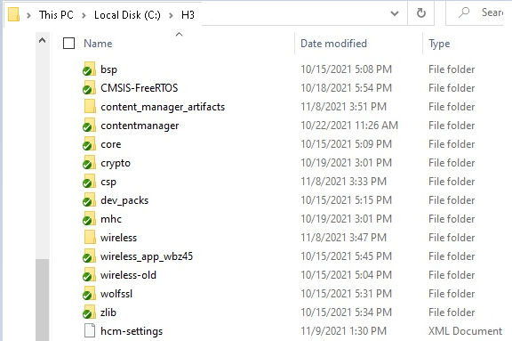
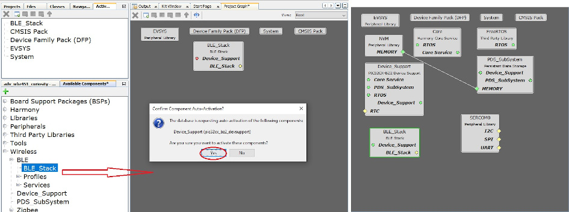
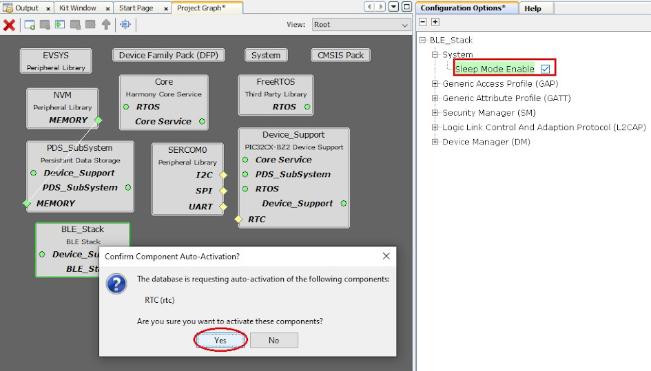
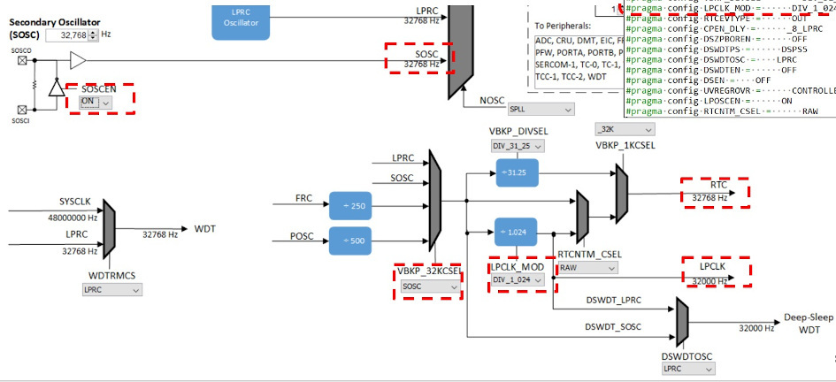
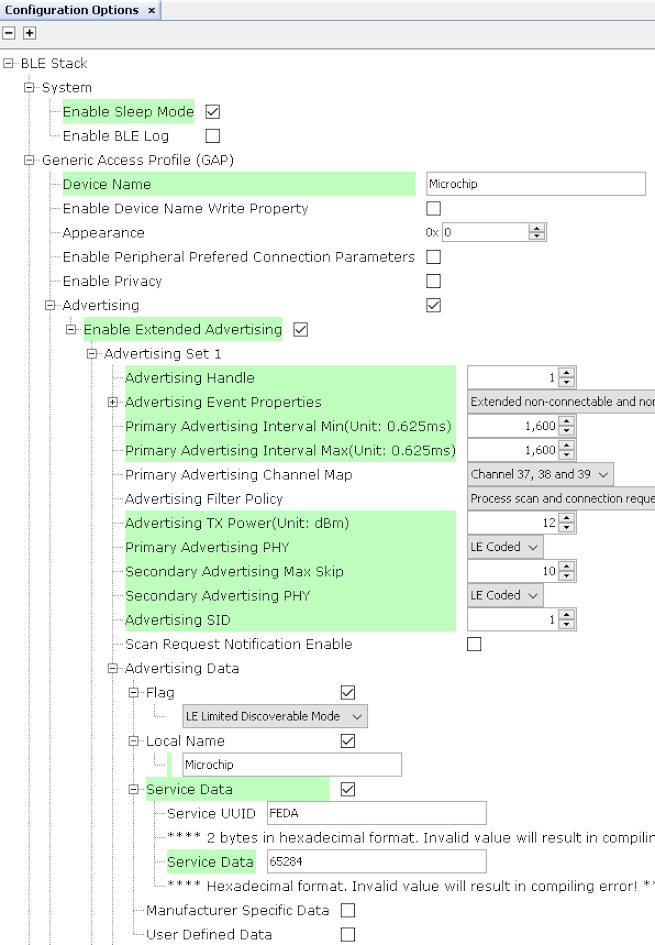
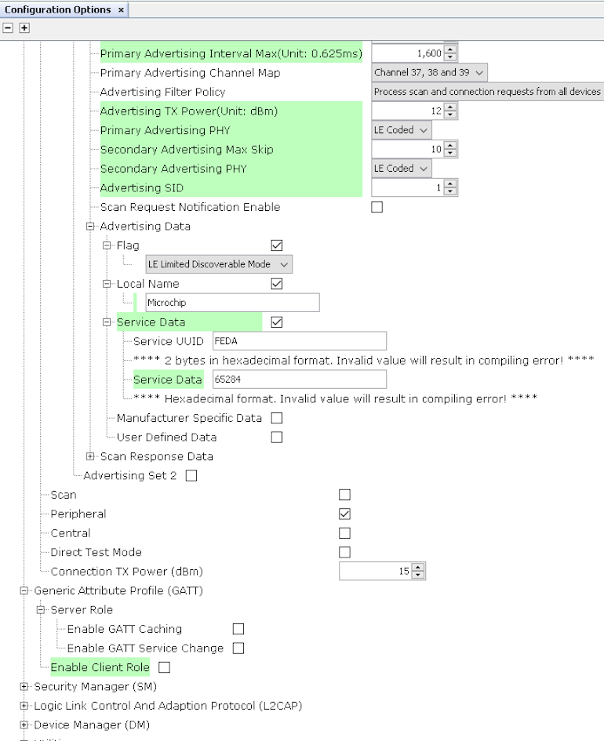
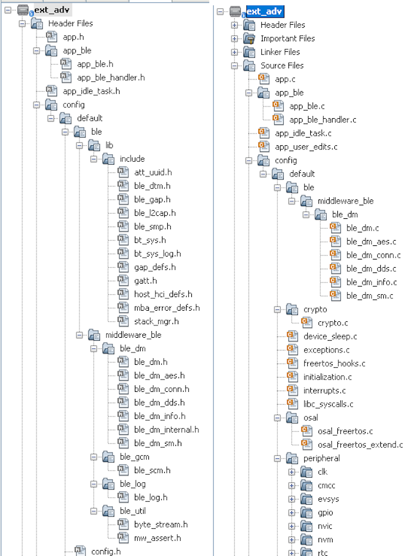
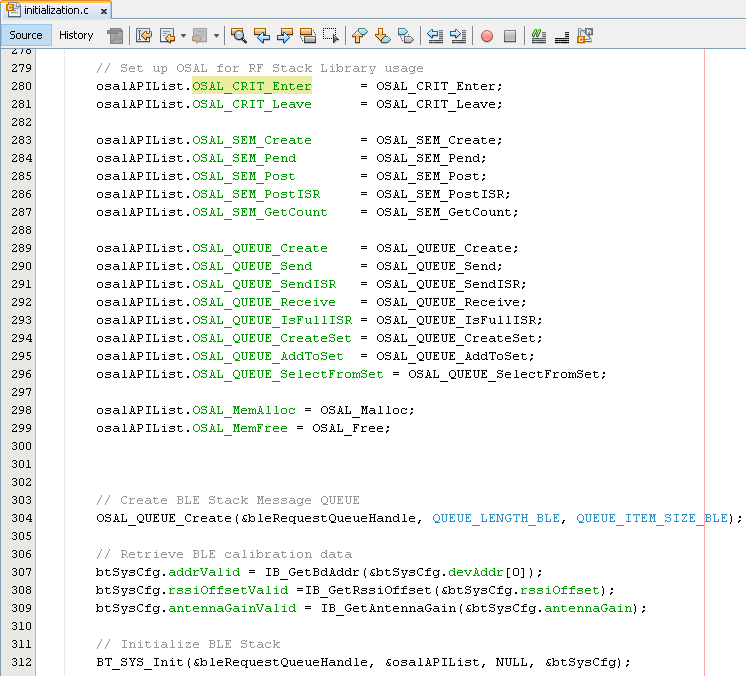
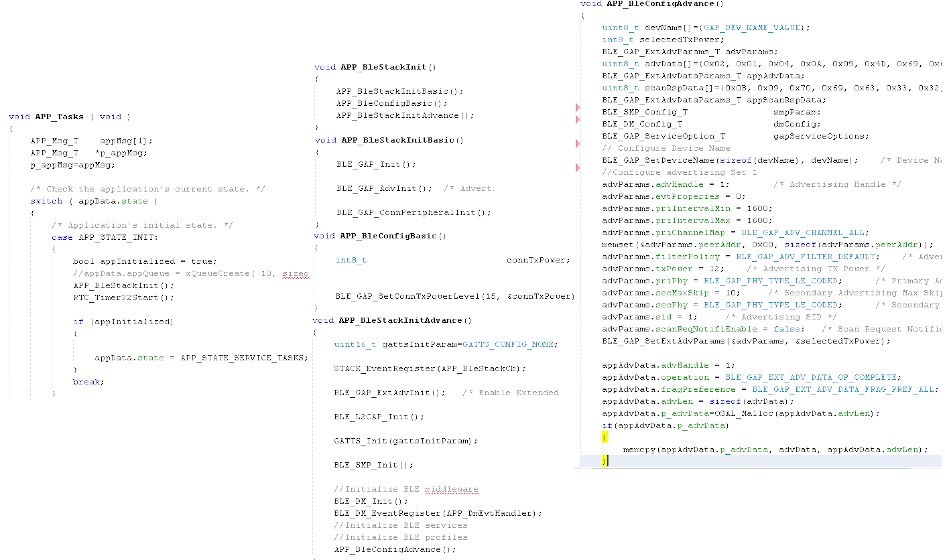
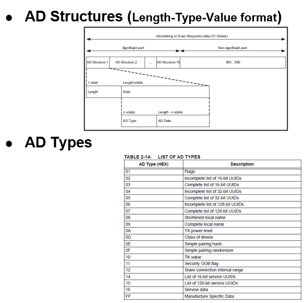

Getting Started with Peripheral Building Blocks
Adding UART --> Extended Advertisements
Introduction
This document will help users enable Extended Advertisements (1M, 2M, coded PHY -- 125kbps) on WBZ451 Curiosity Board. This example (ext_adv) enables users to send application data using extended advertisements. Extended Advertisements are used to send more data than the legacy advertisements allow and allow long range functionality when using Coded PHY. Use of Extended Advertisements also enables the users to select between different PHYs (1M, 2M and LE Coded) which are not permitted when using legacy advertisements. In BLE a peripheral or broadcaster always starts with advertisements. Advertisement packets enable a central or observer to discover a peripheral or broadcaster.
Extended Advertisements implemented in this example can be used for sending more data (2M PHY) or do range tests (Coded PHY). For testing these features a scanner Application can be used which is configured to scan the extended advertisement packets.
To save power, low power mode can be enabled. If conditions are met then WBZ451 will enter into sleep mode. Details will be discussed in later section.
Users can run the precompiled Application Example hex file provided with this example on the WBZ451 Curiosity Board and go through the steps involved in developing this Application application from the scratch
These examples each build on top on one and other. We strongly recommend that you follow the examples in order, to learn the basics concepts before progressing to the more advanced topics.
Recommended Reads
Hardware Required
| Tool | Qty |
|---|---|
| WBZ451 Curiosity Board | 1 (2 if testing with a scanner) |
| Micro USB cable | 1 |
Optional Power Debugger/Multimeter/OscilloScope to measure power.
SDK Setup
Software
- 1.
Smartphone App
None
Programming the precompiled hex file or Application Example
Programming the hex file using MPLABX IPE
- 1.
Precompiled Hex file is located in "<Harmony Content Path>\wireless_apps_pic32cxbz2_wbz45\apps\ble\building_blocks\peripheral\ext_adv\hex" folder
- 2.
Follow the steps mentioned here
Caution: Users should choose the correct Device and Tool information
Programming the Application using MPLABX IDE
- 1.
Follow steps mentioned in of Running a Precompiled Example document
- 2.
Open and program the Application Example "ext_adv.x" located in "<Harmony Content Path>\wireless_apps_pic32cxbz2_wbz45\apps\ble\building_blocks\peripheral\ext_adv\firmware" using MPLABX IDE
<Harmony Content Path> how to find what is my Harmony Content Path
Demo Description
This Application Example enables users to transmit Extended Advertisements @ Coded PHY data rate of 125 Kbps. PDU types of ADV_EXT_IND and ADV_AUX_IND will be transmitted. Application data ("Microchip") is transmitted in Auxiliary packets (ADV_AUX_IND). ADV_EXT_IND carries the Auxiliary Packet Information (ADV_AUX_IND) for scanner to collect the data.
Demo will print "Ext Adv Enabled" information indicating the successful start of Coded PHY Advertisements on a terminal emulator like TeraTerm @ (Speed: 115200, Data: 8-bit, Parity: none, stop bits: 1 bit, Flow control: none). Coded PHY Advertisements are configured to be sent every 2 secs.
BLE Extended Advertisements (125 kbps, 500 kbps)cannot be scanned using a smartphone app. This could be due to support of only legacy advertisements on the smartphone or disabled extended adv API's in smartphone app.
Testing
Users can use another WBZ451 Curiosity Board configured as BLE Scan Ext Adv
This section assumes that a user has already programmed the ext_adv and scan_ext_adv application on 2 WBZ451 Curiosity Boards.
Board1 = WBZ451 Curiosity Board with Ext Adv Programmed
Board2 = WBZ451 Curiosity Board with Scan Ext Adv Programmed
Board1: Open TeraTerm @ (Speed: 115200, Data: 8-bit, Parity: none, stop bits: 1 bit, Flow control: none). Reset the board. Upon reset, "Ext Adv Enable" message is displayed on the TeraTerm.
Board2: Open TeraTerm @ (Speed: 115200, Data: 8-bit, Parity: none, stop bits: 1 bit, Flow control: none). Reset the board. Upon reset, "ExtAdv Scan Enable Success" message is displayed on the TeraTerm. "Microchip" message will be displayed as soon the WBZ451 module performs an extended advertisement scan.
Current Consumption Measurement
Connect the Multimeter/Power Debugger/Oscillo Scope to Power Measurement Header J6. If using Power Debugger, users can use Data Visualizer to measure the current consumption
Users of this package should go through the known issues document and understand the limitations if any with the current low power mode implementation
Developing this Application from scratch using MPLAB Code Configurator
This section explains the steps required by a user to develop this application example from scratch using MPLABx Code Configurator
Tip: New users of MPLAB Code Configurator are recommended to go through the overview.
- 1.
Setup Harmony framework. EA release package has all the neccessary component and should be downloaded individually from the link provided in the package. It is recommended to create framework in the root directory. The framework looks like
 - 2.
Create a new MCC Harmony project - instructions
- 3.Drag and drop BLE_Stack in the project graph and select Yes to all pop ups. Drag and Drop SERCOM0 from Peripherals into project graph for UART messages. Project Graph will look likeFigure 2. .
- 4.
Enable Low Power
Enable Low power mode by selecting Low Power Enable in BLE_Stack Configuration. Select Yes to all pop ups
Click on Window->MCC->Harmony->Clock Configuration

Enable SOSC clock

Configure Advertisement Configuration
Select BLE_Stack component in project graph and make modifications as shown below


Configure UART
Uart Configuration Details can be found here
Generate Code
Instructions onhow to Generate CodeFiles and Routines Automatically generated by the MCC
After generating the program source from MCC interface by clicking Generate Code, the BLE configuration can be found in the following project directories

The OSAL , RF System, BLE System initialization routine executed during program initialization can be found in the project files. This initialization routine is automatically generated by the MCC

The BLE stack initialization routine excuted during Application Initialization can be found in project files. This intitialization routine is automatically generated by the MCC. This call initializes and configures the GAP, GATT, SMP, L2CAP and BLE middleware layers.

Autogenerated, extended adverisement Data Format

| Source Files | Usage |
|---|---|
| app.c | Application State machine, includes calls for Initialization of all BLE stack (GAP,GATT, SMP, L2CAP) related component configurations |
app_ble\ app_ble.c |
Source Code for the BLE stack related component configurations, code related to function calls from app.c |
| app_ble\app_ble_handler.c | All GAP, GATT, SMP and L2CAP Event handlers |
| app_user_edits.c | User Code Change instruction |
Tip: app.c is autogenerated and has a state machine based Application code sample, users can use this template to develop the application|
Header Files
ble_gap.h- This header file contains BLE GAP functions and is automatically included in the app.c file
Function Calls
MCC generates and adds the code to initialize the BLE Stack GAP, GATT, L2CAP and SMP in APP_BleStackInit() function
APP_BleStackInit() is the API that will be called inside the Applications Initial State -- APP_STATE_INIT in app.c
RTC_Timer32Start() defined in plib_rtc_timer.c. It call to start RTC Timer clock to facilitate low power mode.
User Application Development
Include
definitions.h in all the files where UART will be used to print debug information
Tip: definitions.h is not specific to just UART peripheral, instead it should be included in all application source files where peripheral functionality will be exercised
user action is required as mentioned here
Start Ext Advertisement
BLE_GAP_SetExtAdvEnable(true, 0x01, &extAdvEnableParam);
This API is called in the Applications initialstate - APP_STATE_INIT in app.c. Parameters for extended advertisement should be chosen. Below is an example.

Users can exercise various other BLE Advertisement functionalities by using BLE Stack API